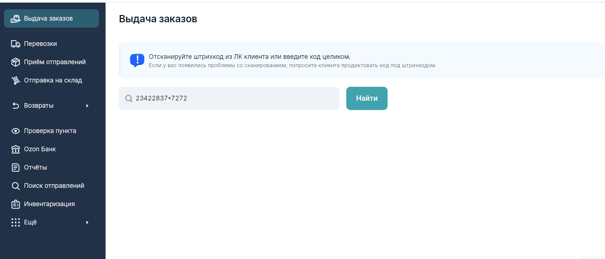
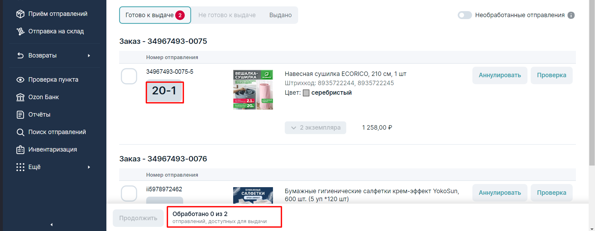
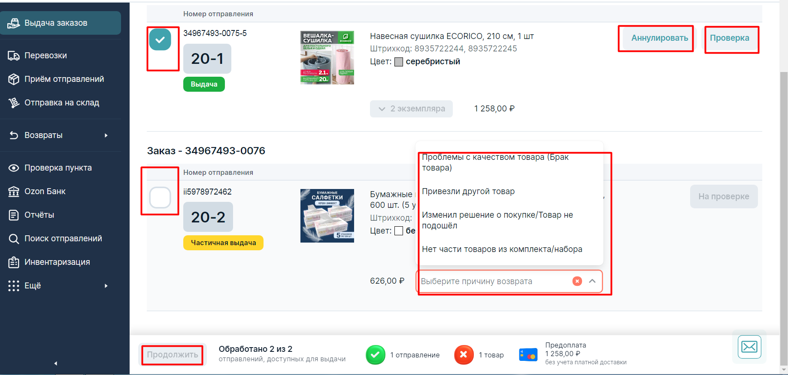

При выдаче товара самое главное - быть внимательным и быстрым!.
Разберем основы выдачи: При выдачи проведении выдачи, обязательно обращайте внимание на мелочи. К примеру, есть заказы "из-за рубежа", при выдаче возле номера заказа будет желтая иконка, с надписью "Из-за рубежа". Нажав на нее, появятся условия выдачи (запрещено вскрытие упаковки и проверка до проведения выдачи).
Чтобы принять клиента, вам нужно перейти во вкладку "Выдача заказов", слева, и просканировать штрих-код, который вам показывает клиент. Если, у клиента нет штрих-кода, то он может назвать вам код для получения, а вы должны ввести его в строку для поиска заказов. Ввод кода для выдачи заказов
После того как вы ввели/про сканировали код, перед вами появляется такое окно с заказами. Опускаем глаза ниже, и видим кол-во товаров к выдаче и ячейку, в которой они должны лежать. (Ниже, на скриншоте, красным указано на что обращать внимание в первую очередь.)
Важно! Сканировать все товары которые вы выдали клиенту. Список для выдачи
После того как нашли и отдали клиенту все заказы, мы начинаем самое сложное. Если клиент хочет отказаться от товара и не вскрывал упаковку, мы можем его отменить. Для этого мы убираем галочку с товара, который хотят отменить и нажимаем на кнопку "Аннулировать". Если потребуется, нужно будет указать причину, которая больше подходит под ситуацию.
Если клиент вскрыл упаковку, то нужно нажать кнопку "Проверка". После чего, убрать галочку и так же отметить причину возврата.
Далее нажимаем кнопку продолжить, выдать.
Список для выдачи
{kind=link}